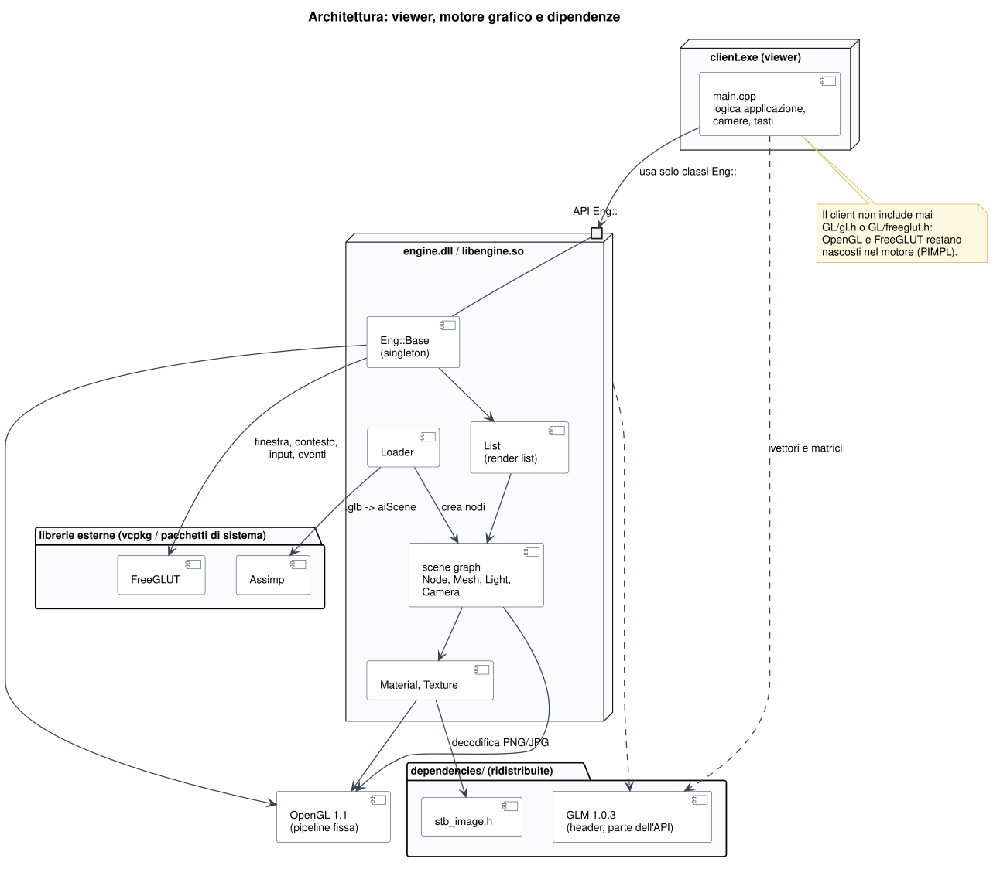
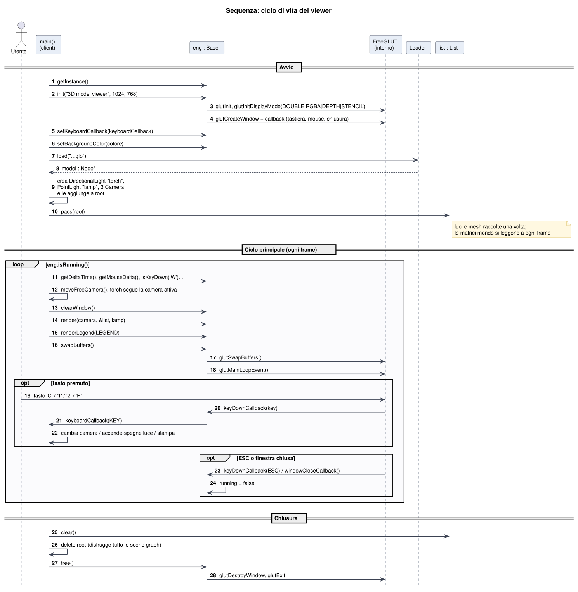
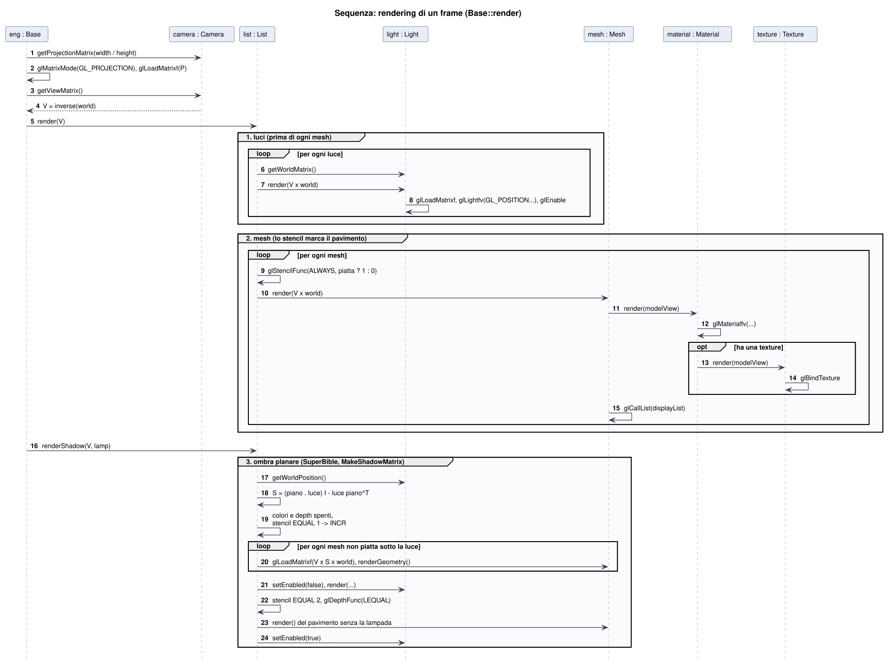
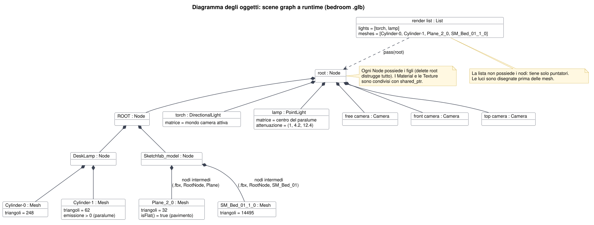

3. Diagramma delle classi

Eng con attributi, metodi e relazioni.engine è una libreria dinamica (engine.dll / libengine.so),
client è il viewer (client.exe). Il client include solo engine.h, che a sua volta
include solo la libreria standard C++ e GLM.Eng::Base è un singleton (una sola finestra e un solo contesto OpenGL per applicazione, Series 3).
Tutto lo stato di FreeGLUT sta nella struttura privata Base::Reserved (PIMPL): il client vede solo
init, setKeyboardCallback, setBackgroundColor, isRunning,
clearWindow, render, swapBuffers e free.Eng::Object è la radice comune: identificatore univoco, nome e il metodo virtuale puro
render(modelView). Nodi, materiali, texture e render list si "disegnano" con la stessa interfaccia.Node ha una matrice locale, un padre e i figli. Matrice mondo = matrice mondo del padre
× matrice locale (vettori colonna, post-moltiplicazione). Mesh, Camera e Light
sono nodi, quindi si posizionano tutti nello stesso modo.Light è astratta (costruttore protetto), con due tipi concreti: DirectionalLight
(posizione omogenea con w = 0) e PointLight (w = 1, con attenuazione). Il viewer ne usa una per tipo,
come chiede il requisito "due luci di tipo diverso, una statica e una dinamica".Mesh punta al suo Material e il materiale alla sua
Texture con std::shared_ptr: più mesh possono usare lo stesso materiale senza copie.List raccoglie luci e mesh in ordine di disegno: prima le
luci (nella pipeline fissa la luce va impostata prima della geometria che illumina), poi le mesh, poi l'ombra planare.Loader::load legge il file con Assimp e restituisce la radice di un nuovo scene graph
(nodi, mesh, materiali, texture incorporate). Nessuna logica dipende dal nome di un oggetto nel file.Node possiede i figli (cancellare la radice cancella tutto); la
List tiene solo puntatori; la copia è disabilitata in Object e in Base.Mostra cosa vede il client e cosa resta dentro il motore. Le dipendenze nella cartella dependencies/ sono solo
header (GLM, stb_image) e sono ridistribuite con il progetto; FreeGLUT e Assimp sono librerie esterne usate solo dal motore.

Eng:: e GLM; OpenGL, FreeGLUT, Assimp e stb_image restano interni.
Eng con attributi, metodi e relazioni.| Simbolo | Significato |
|---|---|
| + / - / # | membro pubblico / privato / protetto |
| sottolineato | membro statico (getInstance, idCounter, lightCount, Loader::load) |
| corsivo, (A) | classe o metodo astratto (Object, Light, Object::render) |
| freccia a triangolo vuoto | ereditarietà (es. Mesh è un Node) |
| rombo pieno | composizione: il contenitore possiede le parti (Node → figli, Base → Reserved) |
| rombo vuoto | aggregazione: riferimento senza possesso esclusivo (Mesh → Material condiviso, List → nodi) |
| freccia tratteggiata | dipendenza: usa o crea oggetti dell'altra classe |
| Classe | Responsabilità | OpenGL / librerie usate dentro |
|---|---|---|
Base | finestra, contesto, input (tastiera, mouse), tempo tra i frame, FPS, legenda dei comandi, avvio del rendering | FreeGLUT, glClear, glViewport, matrice di proiezione, glOrtho |
Object | id univoco, nome, interfaccia render | – |
Node | matrice locale, gerarchia padre/figli, matrice mondo | solo GLM |
Mesh | triangoli (posizione, normale, coordinate texture) compilati una volta in una display list; bounding box nel mondo; riconosce se è piatta (pavimento) | glNewList, glBegin(GL_TRIANGLES), glCallList |
Camera | matrice di vista (inversa del mondo) e di proiezione prospettica | solo GLM (glm::perspective) |
Light | slot GL_LIGHTn, colore, acceso/spento, posizione mondo | glLightfv, glEnable(GL_LIGHTn) |
DirectionalLight | luce all'infinito lungo -Z del nodo (w = 0) | – |
PointLight | luce nel punto del nodo (w = 1) con attenuazione | GL_*_ATTENUATION |
Material | colori ambiente/diffuso/speculare/emissione, lucentezza, texture | glMaterialfv, GL_TEXTURE_2D |
Texture | decodifica un'immagine in memoria e la carica sulla GPU | stb_image, glTexImage2D, glBindTexture |
List | ordine di disegno (luci, mesh), stencil del pavimento, ombra planare | stencil buffer, glColorMask, glDepthFunc |
Loader | file 3D → scene graph con materiali e texture | Assimp |
La milestone chiede di ispirarsi a motori e API esistenti. La struttura segue lo schema comune a Three.js e a OpenSceneGraph: una classe base con nome, un nodo con trasformazione e figli, oggetti specializzati (mesh, luce, camera) che sono nodi, materiali e texture separati e condivisibili, un loader che produce uno scene graph e un renderer che appiattisce il grafo in liste di disegno.
| Questo motore | Three.js | OpenSceneGraph |
|---|---|---|
Object | id/name comuni a Object3D, Material, Texture | osg::Object |
Node | Object3D | osg::Group + osg::MatrixTransform |
Mesh | Mesh (geometria + materiale) | osg::Geode + osg::Geometry |
Camera | PerspectiveCamera | osg::Camera |
Light, DirectionalLight, PointLight | Light, DirectionalLight, PointLight | osg::LightSource + osg::Light |
Material | MeshPhongMaterial | osg::Material (stessi campi di glMaterial) |
Texture | Texture | osg::Texture2D + osg::Image |
List | render list interna di WebGLRenderer | osgUtil::RenderBin (riempita dal CullVisitor) |
Loader | GLTFLoader | osgDB::readNodeFile |
Base | WebGLRenderer + ciclo di animazione | osgViewer::Viewer |
Rispetto a quei motori questa versione resta volutamente piccola: un solo tipo di camera (prospettica), due tipi di luce e un solo renderer a pipeline fissa (OpenGL 1.1), come richiesto dal corso.
Il ciclo principale segue l'interfaccia proposta nella Series 3: init, callback della tastiera, colore di sfondo,
poi clearWindow → disegno → swapBuffers finché isRunning è vero, infine free.
swapBuffers mostra il frame e poi elabora gli eventi della finestra (glutMainLoopEvent), che chiamano le
callback di input.
Eng::Base &eng = Eng::Base::getInstance();
eng.init("3D model viewer", 1024, 768);
eng.setKeyboardCallback(keyboardCallback);
eng.setBackgroundColor(BACKGROUND_COLOR);
...
Eng::List list("render list");
list.pass(root);
while (eng.isRunning())
{
moveFreeCamera(eng);
torch->setMatrix(cameras[activeCamera]->getWorldMatrix());
eng.clearWindow();
eng.render(cameras[activeCamera], &list, lamp);
eng.renderLegend(LEGEND);
eng.swapBuffers();
}
list.clear();
delete root;
eng.free();


Base::render: proiezione, luci, mesh con stencil del pavimento, ombra planare.L'ombra usa la matrice MakeShadowMatrix dell'OpenGL SuperBible (capitolo 9): con il piano del pavimento p e la posizione omogenea della luce L, S = (p · L) I − L pT schiaccia ogni vertice sul pavimento lungo il raggio che parte dalla luce. Le mesh schiacciate scrivono solo nello stencil (valore da 1 a 2, solo dove c'è il pavimento); poi il pavimento viene ridisegnato senza la lampada dove lo stencil vale 2, quindi l'ombra è la parte di pavimento non illuminata dalla lampada.
Gli oggetti presenti in memoria quando il viewer ha caricato il modello bedroom_furniture_set_-_game_ready.glb
(nomi e numero di triangoli come li stampa il programma all'avvio; 14837 triangoli in totale).

| Milestone | Richiesta | Nel progetto |
|---|---|---|
| Series 1 | baseline sotto Git, compilabile su Windows e Linux; GLM come prima dipendenza in dependencies/, allo stesso livello di engine e client | fatto – repository Git; dependencies/glm (solo header) e dependencies/stb; .sln per Visual Studio, Makefile e .cbp per Linux |
| Series 2 | GLM integrata nel motore e header gestiti correttamente quando il client usa la libreria | fatto – engine.h include GLM; il client aggiunge ../engine e ../dependencies agli include |
| Series 3 | classe principale singleton che incapsula FreeGLUT; FreeGLUT non deve diventare una dipendenza del client; interfaccia init / setKeyboardCallback / setBackgroundColor / isRunning / clearWindow / swapBuffers / free | fatto – Eng::Base con PIMPL; FreeGLUT incluso solo nei .cpp del motore e linkato solo dal motore; stessa interfaccia della traccia |
| Series 4 | progetto UML ispirato a motori esistenti; classi .h/.cpp nel progetto del motore; commenti Doxygen | fatto – questo documento (sorgenti PlantUML in doc/uml/); 12 classi in engine/; Doxygen su ogni classe, membro e funzione (engine/Doxyfile) |
GL_LIGHT0 … GL_LIGHT7.Base::render), solo sul primo pavimento piatto trovato.